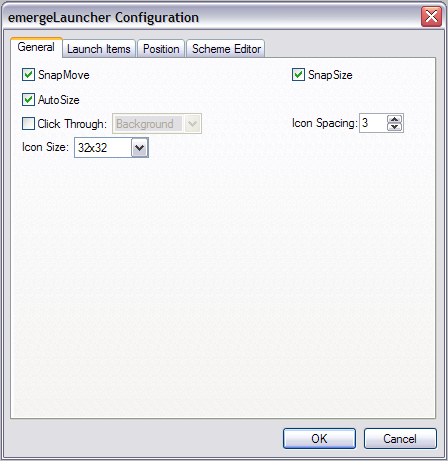
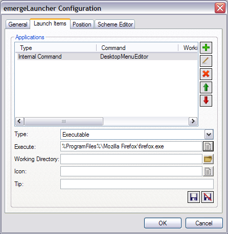
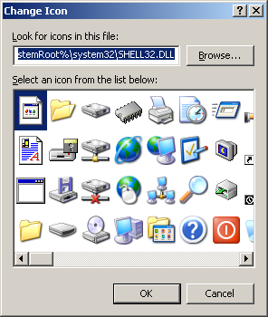
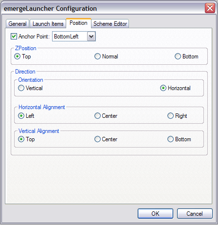

| About |
emergeLauncher provides a "Quick Launch" applet for Emerge Desktop. It displays icons of applications in a movable, resizeable window.
| Configuration |
emergeLauncher is configured by pressing the Ctrl key and right-clicking on the emergeLauncher window. This opens the configuration menu:
About displays the module's author and version and the current style's path and filename.
Load Style allows the user to browse and select a Style File.
Reload Current Style allows to reload the current style after editing.
Configure displays the emergeLauncher configuration dialog box.
Exit closes the module. It can be restarted by highlighting it and clicking on the Start  button in the Launch Applet dialog box (see emergeCore).
button in the Launch Applet dialog box (see emergeCore).
After selecting Configure, the configuration dialog box opens. The first tab is General:

SnapMove makes the window snap to the edges of other applets' windows or the edges of the screen when moving it.
SnapSize makes the window snap to the edges of other applets' windows or the edges of the screen when changing its size.
Click Through allows clicking "through" the window (i.e. allows clicking on whatever is behind it).
Click Through has two modes: Full (the whole window is "transparent" to mouse input), or Background (only the background area is "transparent" but the user can click on the icons in emergeTray, emergeTasks, emergeLauncher, the text in emergeCommand, emergePower, the active mini-window in emergeVWM, the graphs in emergeSysMon).
Important notes: 1) Full Click Through works for any level of opacity, from opaque to fully transparent; 2) Background Click Through automatically sets the background to transparent but does not change the style, this is a known limitation; 3) To manipulate an applet set on Full Click Through, the user must press the Shift key: Shift+Ctrl+LeftClick to move the applet, Shift+Ctrl+RightClick to get the configuration menu and Shift+Alt to resize the applet.
Icon Spacing defines the spacing in pixels between adjacent icons.
Icon Size gives the choice of 16x16, 32x32 or 48x48 pixel icons. Due to system limitations, 48x48 pixel icons can not be used under Windows 2000.
The configuration dialog box's second tab is Launch Items:

To Add  a new item, the user first chooses from the Type drop list between Executable, Internal Commands, Separator or Special Folder.
a new item, the user first chooses from the Type drop list between Executable, Internal Commands, Separator or Special Folder.
Depending on the Type of item selected, the window underneath offers opening a browsing window  (for Executable), Commands, with list in window here (for Internal Commands), a choice of four Styles (for Separator), or My Computer, My Documents, My Network Places, Control Panel, and Recycle Bin (for Special Folders).
(for Executable), Commands, with list in window here (for Internal Commands), a choice of four Styles (for Separator), or My Computer, My Documents, My Network Places, Control Panel, and Recycle Bin (for Special Folders).
Prepending an Executable with "@" (e.g. "@%ProgramFiles%\Mozilla Firefox\firefox.exe") allows the execution of the command from an administrator account after selecting the administrator’s user name (or typing an other existing user name) and entering the password in the Run As dialog box.
The other windows underneath are to select a Working Directory (when appropriate), using the Browse  button, an external Icon, and the option to type a text to appear as a Tip when the mouse is over the icon.
button, an external Icon, and the option to type a text to appear as a Tip when the mouse is over the icon.
The user then clicks on Save  (or Discard
(or Discard  to start over). Pressing the OK button saves the current settings and closes the configuration dialog box.
to start over). Pressing the OK button saves the current settings and closes the configuration dialog box.
The items in the Applications window can be modified  or deleted
or deleted  after hightlighting them.
after hightlighting them.
After the user adds, deletes or modifies incorrectly an item, she can undo changes by clicking the Cancel button. A dialog box will open asking for confirmation to close the configuration dialog box without saving the changes made.
Notes on the Icon window: By default, the icon used is the first icon of the executable. To select a different icon, the user clicks the Browse  button, and can select a different icon (if the executable has more than one), or add an external icon:
button, and can select a different icon (if the executable has more than one), or add an external icon:

By default when adding an icon to a command which does not contain an icon (e.g. most internal commands) emergeLauncher will display the windows icon library SHELL32.DLL located in %SystemRoot%\system32\. Alternatively the user can use any library or executable that contains icons or icon files (.ico))
Note that the icons are updated in the emergeLauncher configuration dialog box only after pressing OK or Cancel.
The configuration dialog box's third tab is Position:

Anchor Point gives the choice of anchoring the window to the monitor's Top Left, Top Center, Top Right, Middle Left, Middle Center, Middle Right, Bottom Left, Bottom Center, or Bottom Right.
ZPosition defines the relative position of the window in the Z axis (i.e. from the screen to the user) and can be set to always on the Top, Normal (behaves as a regular program window), or always at the Bottom.
Orientation defines if the icons are set as a column (Vertical) or as a row (Horizontal).
Independently of the the Orientation, the icons can have three options for Horizontal or Vertical Alignment:
Horizontal Aligment can be set to: align on the Left of the applet (i.e. new items are added to the right), Center (i.e. expand in both directions in relation to the horizontal center), or on the Right.
Vertical Aligment can be set to: Top of the applet, vertical Center, or Bottom.
If Autosize is not selected, when icons reach an edge, they will add a new row or column to the window, depending on Vertical or Horizontal Orientation.
For the configuration dialog box's fourth tab, see the Style Editor.
| Usage |
Left-clicking on the application icon launches the application.
To move the window, the user must press the Ctrl key, left-click on the window, and drag it to another location.
To resize the window (provided that Autosize is not selected), the user must press the Alt key, left-click on one edge of the window, and drag it to a new size.
The window position and size are stored in the applet's xml file, which is located in the User Profile folder under "\Application Data\Emerge Desktop\themes", in a subfolder with the same name as the current Theme. See Theme Manager for more details.